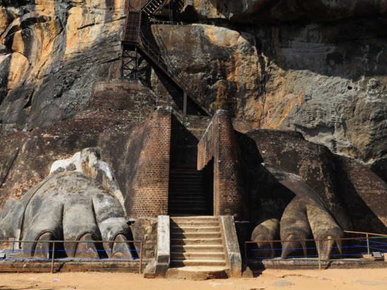
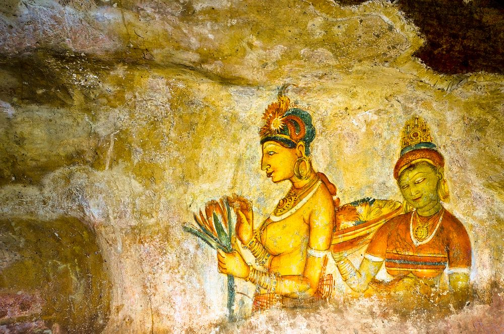

Sigiriya is not only an ancient fortress but also a masterpiece of urban planning and engineering. Constructed in the 5th century CE, the site showcases a unique blend of natural rock formations and man-made structures that display the technological and artistic brilliance of ancient Sri Lankan civilization.
1. Rock Fortress Design
The entire city of Sigiriya was designed around the 200-meter-high rock. King Kashyapa’s palace was built at the summit, offering a 360-degree view for defense. Terraces, ramps, and staircases were carved directly into the rock, creating an organic architectural flow.
2. The Lion Gate & Staircase
The most iconic feature is the Lion Gate, where only the enormous lion’s paws remain today. The staircase originally passed through the lion’s open mouth, symbolizing power and protection. This grand entrance once led directly to the royal palace atop the rock.
3. Water Gardens
Sigiriya’s western gardens are among the oldest landscaped gardens in the world. Symmetrical pools, fountains, and underground canals highlight advanced hydraulic engineering. Some fountains still function during the rainy season.

4. Mirror Wall
The Mirror Wall, once polished so finely the king could see his reflection, runs along the side of the rock. It is now famous for graffiti—ancient visitors' poems and thoughts etched into the wall between the 7th–11th centuries.
5. Frescoes
Sigiriya is home to world-renowned frescoes painted on the rock face itself. These depict celestial maidens or apsaras, often believed to represent either goddesses or royal women. Originally, there were over 500; today, only 21 remain.
6. Boulder Gardens
The Boulder Gardens are built among huge natural rocks. Stone staircases, meditation spots, and viewing platforms integrate seamlessly with the terrain. This zone reflects both defensive strategies and spiritual design.
7. Moats and Ramparts
The city was surrounded by two moats and multiple walls, built for defense and aesthetics. The combination of earthen ramparts, massive stone blocks, and deep moats made Sigiriya a stronghold against enemy invasions.